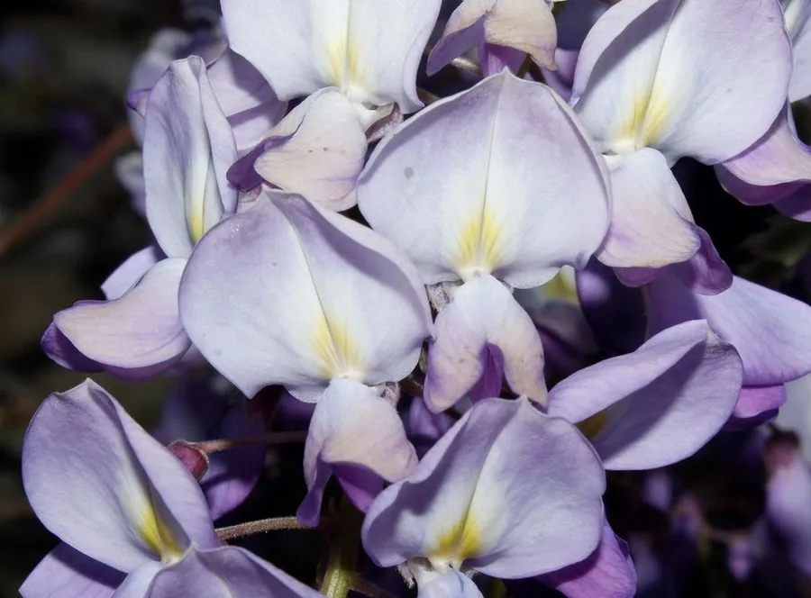

灌木与花木 · 植物界
紫藤 Wisteria sinensis

攀援缠绕的大型藤本植物，春季开出一串串紫色蝶形花，如瀑布垂挂，是庭院花架与廊架上的经典景观。
- 分类
- 门被子植物门纲木兰纲目豆目科豆科属紫藤属
- 栖息环境
- 海拔 2000 米以下的山坡、林缘与溪边，喜光耐寒，喜深厚土壤
- 地理分布
- 原产中国华北至长江流域，辽宁、山东、江苏、浙江等地有分布
- 保护级别
- 暂无评估；中国未列入国家重点保护野生植物名录
物种志
紫藤为落叶攀援大藤本，茎木质化，可缠绕攀爬至 20 余米，树皮灰褐色、纵裂；奇数羽状复叶互生，小叶 7–13 枚，卵状披针形，幼叶有毛。花期 4–5 月，先花后叶或花叶同放，总状花序下垂，长可达 30 cm，由数十朵蝶形花组成，花紫或深紫色，芳香；荚果扁平、革质，长可达 20 cm，内含 3–4 粒种子。
紫藤原产中国，分布于华北至长江流域的山坡、林缘与溪边，喜光、耐寒、耐旱，适宜深厚肥沃、排水良好的土壤，寿命极长。春季花开如紫色瀑布，是庭院花架、廊架与门廊的优良立体绿化材料；上海、苏州等地有数百年古藤，日本亦有树龄逾千年的紫藤名木。茎皮纤维可制绳，花可提炼芳香精油、制作紫藤饼，种子有毒不可食用，全株入药需遵医嘱。
形态与习性
- 株高藤蔓可攀援至 20 m 以上
- 花期4–5 月，总状花序长可达 30 cm
- 果期9–10 月，荚果扁平
- 光照喜光，稍耐阴
- 水分喜湿润，怕积水
- 土壤深厚肥沃、排水良好的壤土
- 主要用途花架廊架绿化、庭院观赏、花可制饼
趣味知识
- 紫藤的总状花序可长达 30 cm，开花时像紫色瀑布从花架上垂落。
- 紫藤是长寿藤本，日本有一株树龄逾 1200 年的紫藤，被称为“藤之瀑布”。
- 紫藤的种子含有毒成分，不可食用，误食可能引起呕吐与腹痛。
- 紫藤茎干会缠绕支架盘旋生长，因此常被用来营造“藤萝架”景观。